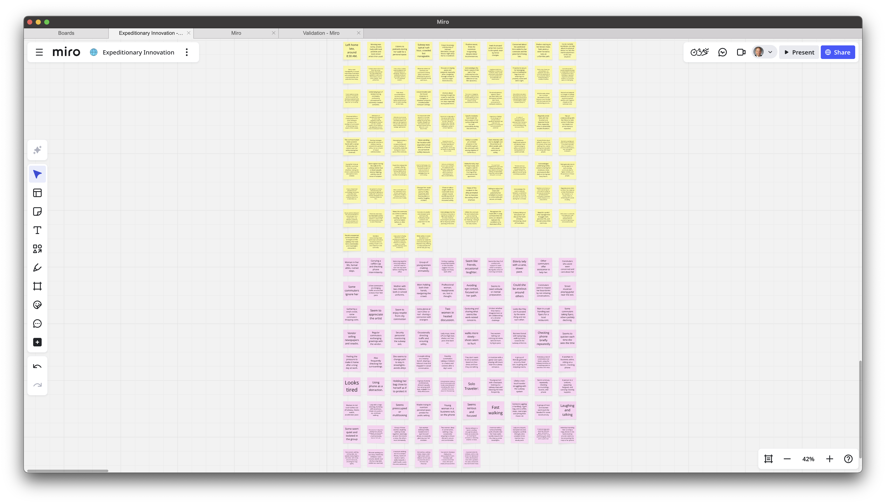
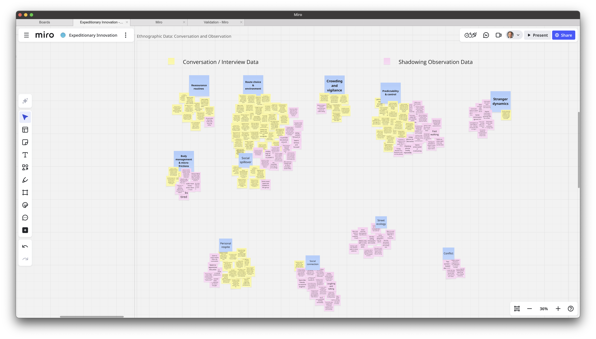

Clustering Themes
From scattered observations to working themes
Following the toolkit naming conventions, this file is named
exp-06-cluster-themes-2025-03-12.qmd.
Overview
In this demo, we take the mountain of raw data from conversations and observations and cluster it into themes.
We demonstrate how we used a Google Sheet (one observation per row) imported into a Miro board for sticky clustering. It pairs with the Toolkit: Clustering Guide.
The goal is to see what frictions, routines, and emotional cues repeat often enough to point toward hypotheses of pain.
Outputs you’ll see here
– Screenshots of the clustering wall (before/after)
– The theme labels we settled on
– Narrative explanations for each cluster
– Core vs. edge distinction, so you can see which themes anchor hypotheses and which are “refrigerated” for later surprises
Files & Links
- Sample dataset (Google Sheet): halo-alert-clustering-sample-sheet
- One observation per row; ready for Miro sticky import.
- Miro board (view-only): halo-alert-clustering-board (optional)
1. Clarify the Unknown
- Question: What unmet needs (pains) emerge repeatedly in women’s commuting experiences?
- Why clustering now: We’ve finished exploratory conversations and observations. Novelty is dropping; it’s time to converge by turning fragments into patterns.
2. Inputs We Clustered
We combined quotes from interviews and notes from observations. Each was reduced to a single movable unit (one per sticky).
Examples of raw observations (short & concrete):
- “I text my roommate when I leave campus so she can watch my ETA.”
- Avoids shortcut street; takes a longer lit route; arrives 12–15 minutes later.
- “Crowded trains make me vigilant; I grip my bag and plan my exit two stops early.”
- Keys between fingers; bag positioned tightly under arm.
- Family texts: “Ping me when you’re home.” If no ping by 10:30pm, they call.
These are examples only. The full set is in the sample sheet.
3. Method: Miro + Sheet Import
- Prepare the Sheet
- Column A =
observation(one per row).
- Optional columns:
source(interview/observation),time,context.
- Column A =
- Import into Miro
- In Miro: Apps → Sticky Note Import (or Paste as sticky notes).
- Select Column A; each row becomes a sticky note.
- Arrange stickies loosely; don’t categorize yet.
- Affinity Map
- Drag stickies into small groups where similar meaning emerges.
- Start new clusters when a sticky doesn’t fit an existing group.
- Keep moving until repetition and coherence feel strong.
- Name Clusters
- Add a short label (2–4 words) above each group.
- Write a one-sentence “why this belongs together” note under the label.
Paper option: write each observation on a sticky note; cluster on a wall; snap photos at each stage.
4. Before / After (Screenshots)
Raw, ungrouped stickies

After grouping & naming clusters

5. Resulting Clusters
After clustering, we sorted themes into core clusters (strong repeated signals) and edge clusters (smaller, but worth keeping).
Core = likely to anchor hypotheses.
Edge = stored in the “refrigerator” for surprises later.
Core Clusters
- Reassurance Routines
- Inside: “Text when you leave/arrive,” timed check-ins, live-tracking links.
- Why it holds: Shared acts that transfer anxiety from walker to trusted other.
- Signal: Frequent; across late-evening and unfamiliar routes.
- Inside: “Text when you leave/arrive,” timed check-ins, live-tracking links.
- Social Spillover
- Inside: Family anxiety, roommate stress, “call me if no ping.”
- Why it holds: Pain extends beyond the walker to their network.
- Signal: Moderate; strongest after 9:00pm.
- Note: Could be treated as a sub-cluster of Reassurance, but distinct enough to stand on its own.
- Inside: Family anxiety, roommate stress, “call me if no ping.”
- Route Choice & Environment
- Inside: Choosing lit/busier streets, crossing street to manage spacing, avoiding alleys.
- Why it holds: Micro-decisions that trade convenience for predictability and visibility.
- Signal: Strong; often co-occurs with Reassurance.
- Inside: Choosing lit/busier streets, crossing street to manage spacing, avoiding alleys.
- Crowding & Vigilance
- Inside: Gripping bags, scanning, discomfort in forced closeness.
- Why it holds: Overcrowding heightens vigilance and amplifies stress.
- Signal: Moderate-high.
- Inside: Gripping bags, scanning, discomfort in forced closeness.
- Predictability & Control
- Inside: Frustration at detours, anxiety when late, recalibrating when routine breaks.
- Why it holds: Security comes from routine; disruption sparks unease.
- Signal: Strong, consistent across sources.
- Inside: Frustration at detours, anxiety when late, recalibrating when routine breaks.
- Body Management & Micro-frictions
- Inside: Footwear discomfort, juggling bags, fatigue, instinctive flinches.
- Why it holds: Small bodily frictions accumulate into real stress.
- Signal: Smaller, but recurring.
- Inside: Footwear discomfort, juggling bags, fatigue, instinctive flinches.
Edge Clusters
- Stranger Dynamics
- Inside: Respectful distance, offers of help, ignoring slower commuters.
- Why it holds: Social interactions with strangers shape comfort.
- Signal: Small, situational.
- Inside: Respectful distance, offers of help, ignoring slower commuters.
- Respite (Personal)
- Inside: Podcasts, daydreaming, phone scrolling, headphones as shield.
- Why it holds: Solo commuters carve out mini “bubble zones.”
- Signal: Individual but common.
- Inside: Podcasts, daydreaming, phone scrolling, headphones as shield.
- Connection (Social)
- Inside: Chats with friends, shared meals, group laughter.
- Why it holds: Commute as social ritual, not just transit.
- Signal: Small, but meaningful.
- Inside: Chats with friends, shared meals, group laughter.
- Street Ecology
- Inside: Vendors, buskers, security staff.
- Why it holds: Environmental features that color mood, sometimes add safety.
- Signal: Thin cluster, but vivid.
- Conflict/Frustration
- Inside: Heated discussions, blocked paths.
- Why it holds: Social friction; not large, but worth noting.
- Signal: Tiny; could merge with Connection.
6. What We Learned
- Patterns, not anecdotes: Seeing multiple notes echo the same idea makes these clusters reliable.
- Core vs. edge: Core clusters give us the best candidates for unmet needs. Edge clusters are weaker signals now but may resurface as hidden opportunities later.
- Variety matters: Conversations gave access to feelings/thoughts; observations gave behaviors/body language. Together, they balanced the picture.
7. Next Steps
- Draft one persona per major core cluster (unless one persona naturally spans multiple).
- Build experience maps for each persona’s key activities.
- Highlight emotional peaks and valleys to surface candidate pains.
- Keep edge clusters visible — don’t lead with them, but don’t throw them away.
The Refrigerator Rule
Edge clusters are like leftovers: not dinner tonight, but they keep well. Store them in your “refrigerator” so you can revisit when surprises appear in testing or solution design.
Traceability
- Toolkit links:
- Related demos:
- Conversations: Exp 04.a — Sarah Thompson (summary)
- Observations: Exp 05.a — Morning Subway Exit
- Conversations: Exp 04.a — Sarah Thompson (summary)